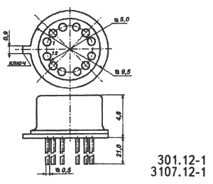
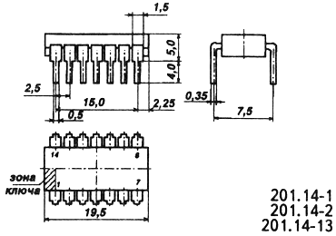
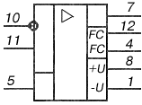
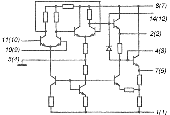

Микросхема К140УД1
(К140УД1А-К140УД1В, КР140УД1А-КР140УД1В)
Микросхемы К140УД1 представляют собой операционые усилители средней точности без частотной коррекции. Корпус К140УД1 (А-В) типа 301.12-1, масса не более 1,5 г., КР140УД1 (А-В) типа 201.14-1 масса не более 1,5 г.
 |
 |
| а | б |
Рис. 1 - Корпуса микросхем:
а) - К140УД1, б) - КР140УД1
|
 К140УД1 1 - напряжение питания -Uп; |
КР140УД1 1 - напряжение питания -Uп; |
Рис. 2 - Условное графическое обозначение микросхем К140УД1 и КР140УД1

Рис. 3 - Электрическая схема микросхемы КР140УД1 (К140УД1)
Таблица 1
| Напряжение питания К140УД1А, КР140УД1А К140УД1(Б,В), КР140УД1(Б,В) |
± 6,3 В ± 0,5% ± 12,6 В ± 0,5% |
| Максимальное выходное напряжение при Uп= ± 6,3 В, Rн=5,05 кОм, Uвх= ± 0,1 В К140УД1А КР140УД1А |
± 2,8 В +3; -2,7 В |
| Максимальное выходное напряжение при Uп=±12,6 В,Rн=5,05 кОм, Uвх=±0,1 В К140УД1Б,В, КР140УД1Б,В |
+6; -5,7 В |
| Напряжение смещения нуля при Uп= ± 6,3 В, Rн=5,05 кОм К140УД1А, КР140УД1А при Uп= ± 12,6 В, Rн=5,05 кОм К140УД1Б,В, КР140УД1Б КР140УД1В |
± 7 мВ ± 7 мВ ± 5 мВ |
| Ток потребления К140УД1А, КР140УД1А К140УД1(Б,В), КР140УД1(Б,В) |
не более 4,5 мА не более 10 мА |
| Входной ток при Uп= ± 6,3 В, Rн=5,05 кОм К140УД1А, КР140УД1А при Uп= ± 12,6 В, Rн=5,05 кОм КР140УД1Б К140УД1 (Б,В) КР140УД1В |
± 7 мкА ± 7,5 мкА ± 9 мкА |
| Разность входных токов | не более 2,5 мкА |
| Коэффициент усиления напряжения при Uп= ± 6,3 В, Rн=5,05 кОм К140УД1А, КР140УД1А при Uп= ± 12,6 В, Rн=5,05 кОм К140УД1Б КР140УД1Б К140УД1В, КР140УД1В |
500...4500 1350...12000 2000...12000 не менее 8000 |
| Коэффициент ослабления синфазного входного напряжения | не менее 60 дБ |
| Средний температурный коэффициент напряжения смещения | не более 60 мкВ/ ° C |
| Максимальная скорость нарастания выходного напряжения К140УД1А К140УД1(Б,В) КР140УД1А КР140УД1(Б,В) |
не менее 1 В/мкс не менее 3,5 В/мкс не менее 0,2 В/мкс не менее 0,1 В/мкс |
| Время установления выходного напряжения | не более 1,5 мкс |
| Входное сопротивление К140УД1А, КР140УД1А К140УД1(Б,В), КР140УД1(Б,В) |
50 кОм 30 кОм |
| Выходное сопротивление | 300 Ом |
| Частота единичного усиления | 0,1 МГц |
Таблица 2
| Напряжение питания К140УД1А, КР140УД1А К140УД1(Б,В), КР140УД1(Б,В) |
± 6,6 В ± 13,2 В |
| Температура окружающей среды К140УД1 КР140УД1 |
-45...+85 ° C -45...+70 ° C |
Рекомендации по применению
При одновременной подаче на входы ИС синфазного и дифференциального входных напряжений потенциал на каждом входе не должен превышать 1,5 и 3 В для К140УД1А, КР140УД1А; 3 и 6 для К140УД1(Б,В), КР140УД1(Б,В).
Зарубежные аналоги
μ A702HC, μ A702PC
Источники
chipinfo.ru - Параметры интегральных микросхем К140УД1А-К140УД1В , КР140УД1А-КР140УД1В
Литература
Интегральные микросхемы и их зарубежные аналоги: Справочник. Том 7./А. В. Нефедов. - М.:ИП РадиоСофт, 1999г. - 640с.:ил.
Отечественные микросхемы и зарубежные аналоги Справочник. Перельман Б.Л.,Шевелев В.И. "НТЦ Микротех", 1998г.,376 с. - ISBN-5-85823-006-7
Интегральные микросхемы Справочник. Тарабрин Б.В.,Лунин Л.Ф.,Смирнов Ю.Н. "Радио и связь", 1983 г.,528 с. - ББК 32.844.1 И73